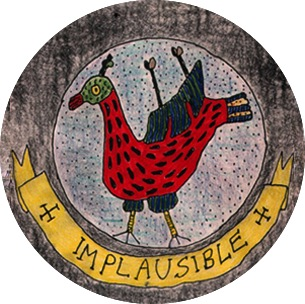

Thursday, September the 15th, 2011
back to: title, date or indexes
Dear Mr Key, writes Dr Ruth Pastry, I read yesterday's piece about nisbet spotting and put two and two together. I think the “hapless enthusiasts” of the Nisbet Spotting Society were seeking high and low for that odd being depicted in the Hooting Yard “implausible” emblem, as shown in the heading of your website and on those fetching lapel accoutrements. My unpaid intern research assistants tell me that the emblem first appeared, in black and white, on the cover of an edition of the ReR Quarterly magazine in the late 1980s, cheek by jowl with several other emblems. If this is the case, then in terms of simple chronology it would have been impossible for nisbet spotters of the early 1970s to spot it, as it did not yet exist. Had you had a bit of stamina and kept up regular production of the Official Journal of the Nisbet Spotting Society, those hapless enthusiasts would not, with the passing of time, have been quite so hapless. Yours indefatigably, Dr Ruth Pastry.

Dr Pastry is correct about the provenance of the emblem. If any reader has a copy of the magazine in question, perhaps they would be good enough to scan both front and back covers and send them to Mr Key. On the question of whether or not the “odd being” is indeed a nisbet, I think it best to reserve judgement until a panel of experts has been empanelled to consider the matter with due diligence.